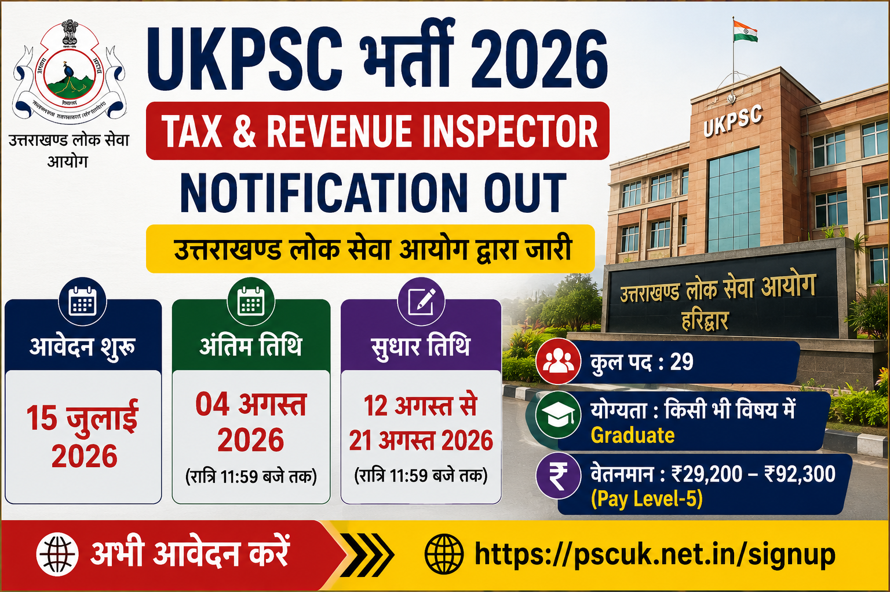

उत्तराखण्ड लोक सेवा आयोग (UKPSC) ने Tax & Revenue Inspector Recruitment 2026 का आधिकारिक नोटिफिकेशन जारी कर दिया है। इस भर्ती के तहत कुल 29 पदों पर आवेदन आमंत्रित किए गए हैं। ऑनलाइन आवेदन प्रक्रिया 15 जुलाई 2026 से शुरू हो चुकी है और इच्छुक उम्मीदवार 04 अगस्त 2026 तक आवेदन कर सकते हैं।
यदि आप उत्तराखण्ड में सरकारी नौकरी की तैयारी कर रहे हैं तो आपके लिए अच्छी खबर है। उत्तराखण्ड लोक सेवा आयोग (UKPSC) ने Tax & Revenue Inspector Examination 2026 के लिए आधिकारिक भर्ती अधिसूचना जारी कर दी है।
इस भर्ती के माध्यम से नगर निकाय विभाग में Tax & Revenue Inspector के कुल 29 रिक्त पदों पर योग्य उम्मीदवारों का चयन किया जाएगा। आवेदन केवल ऑनलाइन माध्यम से स्वीकार किए जाएंगे।
| विवरण | जानकारी |
|---|---|
| Recruitment Board | Uttarakhand Public Service Commission (UKPSC) |
| Post Name | Tax & Revenue Inspector |
| Total Vacancy | 29 Posts |
| Application Mode | Online |
| Job Location | Uttarakhand |
| Official Website | psc.uk.gov.in |
| कार्यक्रम | तिथि |
|---|---|
| Notification Released | 15 July 2026 |
| Online Application Start | 15 July 2026 |
| Last Date to Apply | 04 August 2026 |
| Fee Payment Last Date | 04 August 2026 |
| Correction Window | 12 August – 21 August 2026 |
| Post Name | Vacancy |
|---|---|
| Tax & Revenue Inspector | 29 |
उम्मीदवार के पास भारत में किसी मान्यता प्राप्त विश्वविद्यालय से किसी भी विषय में Graduation (Bachelor Degree) होना अनिवार्य है।
अभ्यर्थियों को आवेदन करने से पहले आधिकारिक नोटिफिकेशन में दी गई सभी पात्रता शर्तों को ध्यानपूर्वक पढ़ लेना चाहिए।
| विवरण | जानकारी |
|---|---|
| Minimum Age | 21 Years |
| Maximum Age | 42 Years |
| Age Relaxation | सरकारी नियमों के अनुसार |
चयनित उम्मीदवारों को उत्तराखण्ड सरकार के नियमानुसार Pay Level-5 (₹29,200 – ₹92,300) के अंतर्गत वेतन एवं अन्य भत्तों का लाभ दिया जाएगा।
आवेदन शुल्क का भुगतान केवल Net Banking, Debit Card, Credit Card अथवा UPI के माध्यम से ऑनलाइन किया जा सकेगा। विस्तृत शुल्क की जानकारी आधिकारिक नोटिफिकेशन में उपलब्ध है।
UKPSC Tax & Revenue Inspector Recruitment 2026 के लिए ऑनलाइन आवेदन करने हेतु नीचे दिए गए बटन पर क्लिक करें।
📄 Download Official Notification
UKPSC द्वारा Tax & Revenue Inspector Recruitment 2026 की आवेदन प्रक्रिया शुरू कर दी गई है। योग्य उम्मीदवार 15 जुलाई 2026 से 04 अगस्त 2026 तक ऑनलाइन आवेदन कर सकते हैं। आवेदन करने से पहले पात्रता, आयु सीमा एवं अन्य शर्तों की जांच अवश्य करें।
यदि आप इस भर्ती के लिए पात्र हैं, तो अंतिम तिथि का इंतजार न करें। समय रहते आवेदन करें और परीक्षा की तैयारी अभी से शुरू कर दें।
ऑनलाइन आवेदन प्रक्रिया 15 जुलाई 2026 से शुरू हो चुकी है।
इच्छुक उम्मीदवार 04 अगस्त 2026 तक ऑनलाइन आवेदन कर सकते हैं।
उम्मीदवार UKPSC के आधिकारिक ऑनलाइन पोर्टल पर जाकर आवेदन कर सकते हैं।
इस भर्ती अभियान के अंतर्गत Tax & Revenue Inspector के कुल 29 पदों पर भर्ती की जाएगी।
न्यूनतम आयु 21 वर्ष तथा अधिकतम आयु 42 वर्ष निर्धारित की गई है। आरक्षित वर्ग को नियमानुसार आयु में छूट मिलेगी।
उम्मीदवारों का चयन लिखित परीक्षा, दस्तावेज़ सत्यापन तथा मेडिकल परीक्षण के आधार पर किया जाएगा।
चयनित उम्मीदवारों को Pay Level-5 (₹29,200–₹92,300) के अनुसार वेतन एवं अन्य सरकारी भत्ते दिए जाएंगे।
आवेदन शुल्क का भुगतान केवल ऑनलाइन माध्यम (UPI, Debit Card, Credit Card, Net Banking) से किया जा सकता है।
नहीं। आवेदन केवल ऑनलाइन माध्यम से ही स्वीकार किए जाएंगे।
UKPSC Tax & Revenue Inspector Recruitment 2026 से संबंधित सभी महत्वपूर्ण अपडेट Education Update Hub एवं UKPSC की आधिकारिक वेबसाइट पर उपलब्ध कराए जाएंगे।